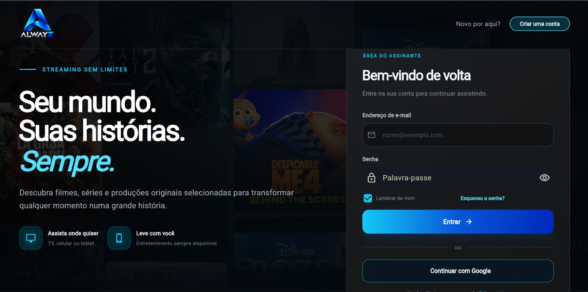
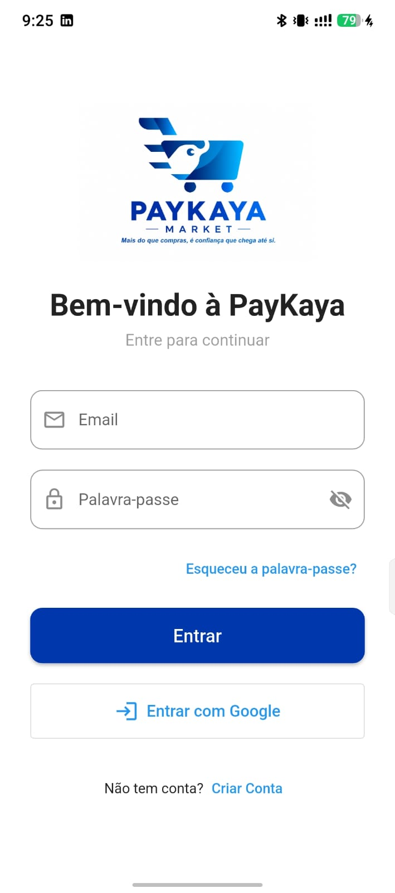
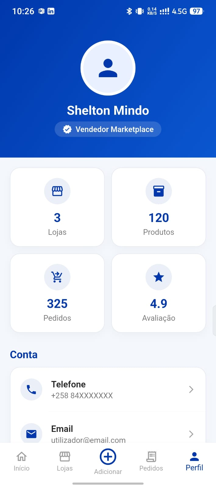
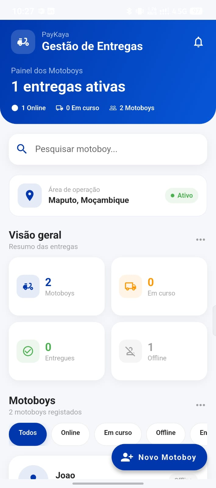
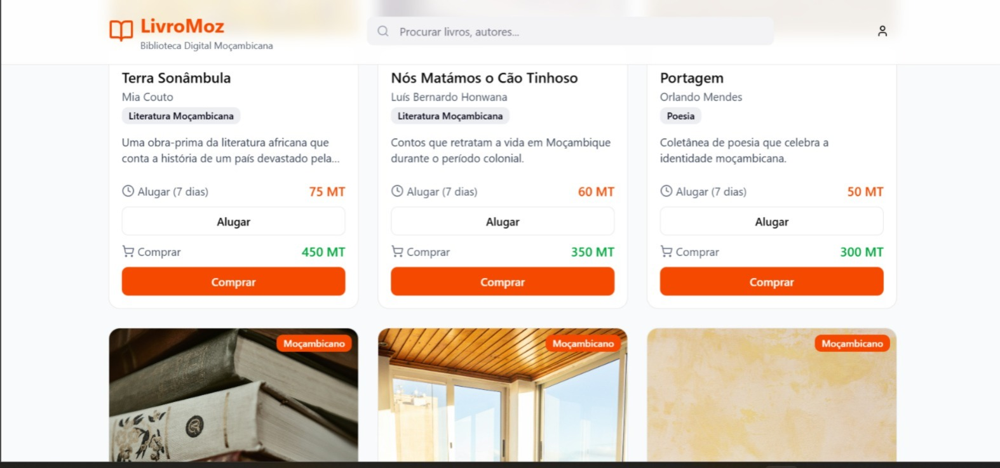
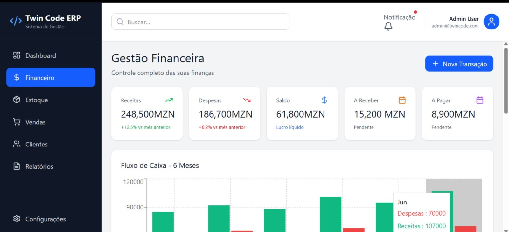
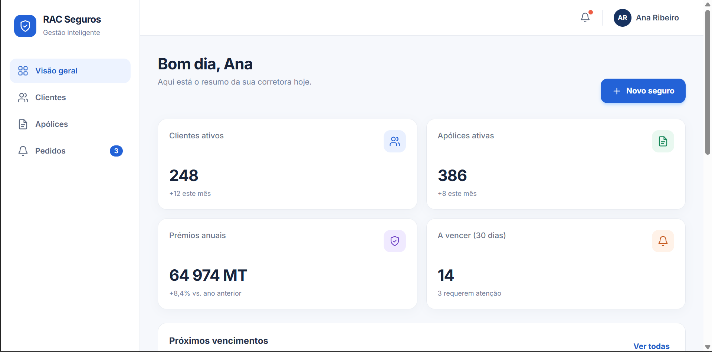
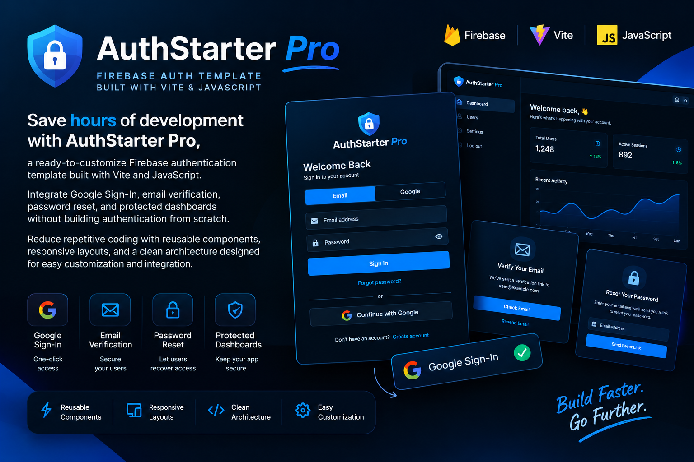

TI & CIBERSEGURANÇA
Movitel
Estágio / experiência prática em ambiente de TI
Contacto com protocolos de rede, diagnóstico de conectividade, DNS, serviços de domínio e conceitos de segurança informática, em contexto profissional.
“A simplicidade é pré-requisito da fiabilidade.”
Bem-vindo ao portfólio de Shelton Mindo
Engenharia Informática · Moçambique
Identifico problemas, desenho soluções e transformo ideias em produtos digitais. Sou finalista de Engenharia Informática no ISCTEM, com foco no desenvolvimento de software, sistemas de informação, gestão segura de dados e automação de processos com CI/CD.
01 / Sobre mim
Formação académica, experiência prática e vontade de continuar a evoluir.
Não quero apenas escrever código. Quero compreender os problemas, desenhar boas soluções e construir sistemas úteis, seguros e sustentáveis.
A minha formação permite-me explorar diferentes áreas da tecnologia. Tenho trabalhado em aplicações móveis com Flutter e Firebase, organização de dados e automação de processos de desenvolvimento com GitHub Actions.
Desenvolvi também experiência prática com bases de dados e tenho aprofundado conhecimentos de redes, protocolos, serviços de domínio e cibersegurança.
O meu objetivo é evoluir para engenheiro de software Full Stack, consolidando competências de frontend, backend, bases de dados, cloud e DevOps.
02 / Experiência
Experiências que ligam o conhecimento técnico aos desafios do mundo profissional.
Estágio / experiência prática em ambiente de TI
Contacto com protocolos de rede, diagnóstico de conectividade, DNS, serviços de domínio e conceitos de segurança informática, em contexto profissional.
Criação e implementação de base de dados
Solução para estruturar e digitalizar informação anteriormente mantida em papel, facilitando a organização e a consulta dos registos.
03 / Portfólio técnico
Cada projeto parte de um problema concreto e mostra a solução que construí.

Explorar filmes e séries exige uma experiência rápida e organizada; sem arquitetura clara, uma app de streaming torna-se impossível de evoluir.
Flutter com Provider para um estado modular, Firebase Auth para contas de utilizador e Firestore e Storage para guardar catálogo e média na cloud.



O comércio local não tem presença digital e o cliente não sabe que lojas existem perto dele, nem como encomendar.
Um marketplace único em Flutter: descobrir lojas próximas, explorar produtos e encomendar com entrega, com contas seguras via Firebase Auth.

Falta acesso fácil a livros e conteúdos educativos, e a literatura moçambicana tem pouca visibilidade.
Plataforma digital em Flutter e Firebase que liga leitores a livros e conteúdos, com espaço dedicado à literatura nacional.

A comunicação entre alunos e docentes, os materiais de estudo e o acompanhamento da aprendizagem ficam dispersos.
Plataforma web em HTML, CSS e JavaScript que centraliza a comunicação, a partilha de materiais e o acompanhamento num só lugar.

Dados e processos espalhados por vários sítios obrigam a trabalho manual e impedem uma visão única do negócio.
ERP em Java e tecnologias web, com SQL e modelação de dados: integra a informação, automatiza processos e centraliza a gestão num único sistema.

Os registos viviam em papel: difíceis de organizar, consultar e recuperar.
Base de dados MySQL modelada de raiz, com controlo de acessos, backups e recuperação, encriptação e prevenção de SQL Injection. Implementada e a substituir o papel.

Cada nova aplicação web obriga a refazer do zero o login, o registo e a recuperação de palavra-passe.
Template reutilizável com Vite e Firebase: login, registo, confirmação de e-mail, recuperação de palavra-passe e páginas protegidas, prontos a usar.

As bottle stores têm pouca visibilidade online e o consumidor tem dificuldade em descobrir produtos e encomendar.
Marketplace em Flutter e Firestore que reúne estabelecimentos e produtos num só sítio, com GitHub Actions a automatizar o fluxo de desenvolvimento.
04 / Competências
Tecnologias com que já trabalhei ou que estou a aprofundar.
Flutter, Dart, HTML, CSS, JavaScript, PHP, Java e fundamentos de React Native.
MySQL, Oracle SQL, Firebase Authentication, Cloud Firestore, Firebase Storage, modelação de dados, JSON, Node.js, CRUD e APIs.
Git, GitHub, YAML, GitHub Actions, testes automatizados e conceitos de CI/CD.
Redes, DNS, serviços de domínio, diagnóstico técnico e fundamentos de cibersegurança.
05 / Contacto
Aberto a estágio Profissional, desenvolvimento de software, colaboração em projetos e novas oportunidades de aprendizagem.
Fase de testesAplicação mobile
Aplicação de streaming de filmes e séries em Flutter e Firebase.
Estudo de caso. O código-fonte deste projeto é privado. Este repositório documenta o problema, a solução e as decisões técnicas.
Explorar filmes e séries exige uma experiência rápida e organizada. Sem arquitetura clara, uma app de streaming torna-se difícil de evoluir.
Uma app modular: estado gerido com Provider, contas com Firebase Auth e catálogo e média na cloud (Firestore e Storage).
App Flutter · Provider → Firebase Auth
App Flutter · Provider → Cloud Firestore
App Flutter · Provider → Firebase Storage
Flutter, Dart, Provider,
Firebase Auth, Cloud Firestore,
Firebase Storage
Organizar uma app Flutter por módulos e ligar autenticação e dados na cloud de ponta a ponta.
LinkedIn · mindoShelton55@gmail.com
Fase de testesMarketplace mobile
Marketplace mobile que liga consumidores, comerciantes e serviços de entrega.
Estudo de caso. O código-fonte deste projeto é privado. Este repositório documenta o problema, a solução e as decisões técnicas.
O comércio local tem pouca presença digital e o cliente não sabe que lojas existem perto dele, nem como encomendar.
Um único ambiente onde se descobrem lojas próximas, se exploram produtos e se faz a encomenda com entrega.
Consumidor → App FlutterComerciante → App FlutterApp Flutter → Firebase AuthApp Flutter → Serviço de entrega
Flutter, Dart, Firebase Auth,
UI/UX
Desenhar um produto com vários tipos de utilizador e transformar um fluxo de compra real em ecrãs simples.
LinkedIn · mindoShelton55@gmail.com
Fase de testesPlataforma de leitura
Plataforma digital de acesso a livros e conteúdos educativos, com foco na literatura moçambicana.
Estudo de caso. O código-fonte deste projeto é privado. Este repositório documenta o problema, a solução e as decisões técnicas.
Falta acesso fácil a livros e conteúdos educativos, e a literatura moçambicana tem pouca visibilidade.
Uma plataforma que liga leitores a livros e conteúdos digitais e dá espaço à literatura nacional.
App Flutter → FirebaseFirebase → Conteúdo digital
Flutter, Firebase,
Conteúdo digital
Pensar um produto cultural: organizar conteúdo, descoberta e acesso.
LinkedIn · mindoShelton55@gmail.com
Em desenvolvimentoEducação
Plataforma web que aproxima alunos e docentes.
Estudo de caso. O código-fonte deste projeto é privado. Este repositório documenta o problema, a solução e as decisões técnicas.
A comunicação entre alunos e docentes, os materiais de estudo e o acompanhamento da aprendizagem ficam dispersos.
Uma plataforma web que centraliza a comunicação, a partilha de materiais e o acompanhamento num só lugar.
Aluno → Plataforma webDocente → Plataforma webHTML, CSS, JavaScript
Construir uma interface clara para dois tipos de utilizador com necessidades diferentes.
LinkedIn · mindoShelton55@gmail.com
ImplementadoGestão empresarial
Sistemas ERP em Java e tecnologias web para gestão empresarial.
Estudo de caso. O código-fonte deste projeto é privado. Este repositório documenta o problema, a solução e as decisões técnicas.
Dados e processos espalhados por vários sítios obrigam a trabalho manual e impedem uma visão única do negócio.
Um ERP que integra a informação, automatiza processos e centraliza a gestão num único sistema.
Utilizador → Interface web · Java WebInterface web · Java Web →
Lógica de negócio · Java
Lógica de negócio · Java → Base de dados SQL
Java, HTML, Java Web,
SQL, Modelação de dados,
Gestão de processos
Ligar modelação de dados, regras de negócio e interface num sistema completo.
LinkedIn · mindoShelton55@gmail.com
ImplementadoSistema de dados
Base de dados MySQL que substituiu o registo manual em papel.
Estudo de caso. O código-fonte deste projeto é privado. Este repositório documenta o problema, a solução e as decisões técnicas.
Os registos viviam em papel: difíceis de organizar, consultar e recuperar.
Uma base de dados MySQL modelada de raiz, com acessos controlados, backups e proteção contra ataques comuns.
Utilizadores autorizados →
Controlo de acessos
Controlo de acessos → MySQLMySQL → Backups
MySQL, Modelação de dados,
Controlo de acessos, Backups e recuperação,
Encriptação, Prevenção de SQL Injection
Sem capturas públicas: o projeto tem dados reais de uma empresa.
Digitalizar um processo real, com responsabilidade sobre dados sensíveis.
LinkedIn · mindoShelton55@gmail.com
ConcluídoTemplate web
Template web reutilizável de autenticação.
Estudo de caso. O código-fonte deste projeto é privado. Este repositório documenta o problema, a solução e as decisões técnicas.
Cada nova aplicação web obriga a refazer do zero o login, o registo e a recuperação de palavra-passe.
Um template pronto a usar, com Vite e Firebase, que traz a autenticação completa em minutos.
Browser · Vite → Firebase AuthBrowser · Vite → Rotas protegidas
Vite, JavaScript, Firebase,
HTML, CSS
Transformar um problema repetido em produto reutilizável.
LinkedIn · mindoShelton55@gmail.com
Em desenvolvimentoDelivery de bebidas
Marketplace que conecta bottle stores aos consumidores.
Estudo de caso. O código-fonte deste projeto é privado. Este repositório documenta o problema, a solução e as decisões técnicas.
As bottle stores têm pouca visibilidade online e o consumidor tem dificuldade em descobrir produtos e encomendar.
Um marketplace que reúne estabelecimentos e produtos num só sítio e simplifica a descoberta e a encomenda.
App Flutter → FirestoreGitHub Actions → App Flutter
Flutter, Firebase / Firestore,
GitHub Actions
Combinar produto e DevOps: entregar com mais segurança e menos trabalho manual.
LinkedIn · mindoShelton55@gmail.com